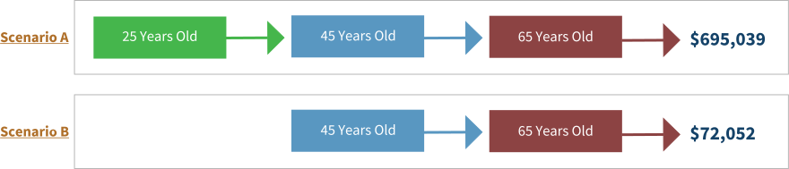

The Impact of Time
While time may not eliminate risk in the form of volatility, it is vital in increasing the impact of returns through compounding. As the following scenarios demonstrate, the length of time a portfolio has to compound can be much more important than the actual amount of an investment. Click each scenario heading to learn more.

See below to learn about the differences between these scenarios
In each scenario the amount of money invested and the time period of investment are the same ($20,000 and 20 years). The only difference is the timing of the investment. As shown, the additional 20 years of compounding in “Scenario A” led to significantly higher returns.
In summary, the value of time and compounding was best summarized by Albert Einstein, who said, "Compounding is mankind's greatest invention because it allows for the reliable, systematic accumulation of wealth."